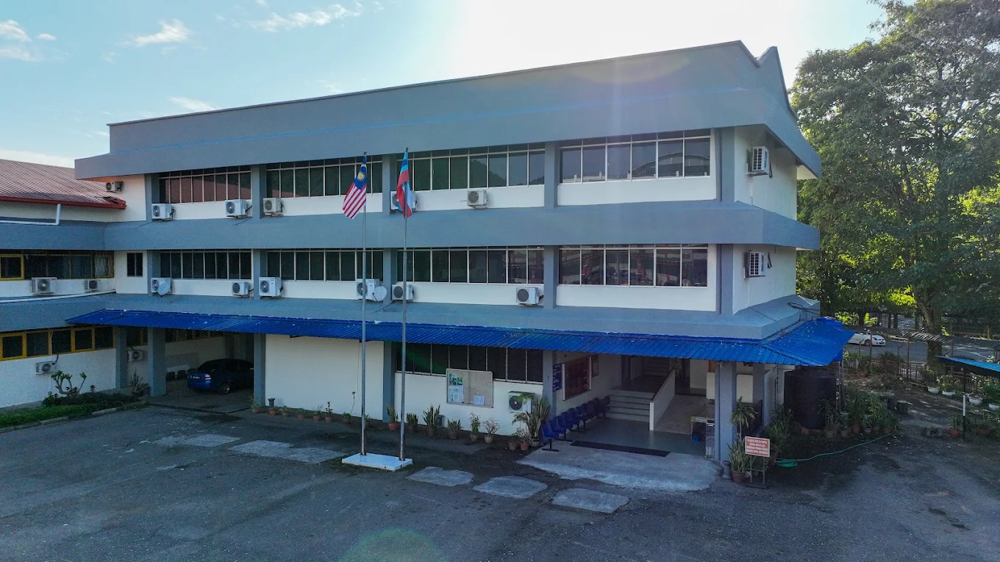

Telefon
Talian am
088-875500
Hubungi Pejabat Daerah Ranau melalui telefon, faks, e-mel atau surat, atau datang terus ke pejabat dalam waktu urusan.
Talian am
088-875500
Nombor faks
088-875511
Pertanyaan umum
pd.ranau@sabah.gov.my

Kaunter dibuka mengikut waktu urusan. Sila bawa dokumen pengenalan diri bagi urusan rasmi.
Urusan ini boleh dibuat secara dalam talian.